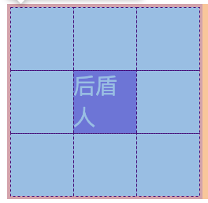

CSS总结
https://houdunren.gitee.io/note/
对原链接的CSS文档，学习过程中的不完整总结，谢谢原作者的贡献👏
文本控制
文本基础
xxxxxxxxxx字体设置font-family: 'Courier New', Courier;引入字体@font-face { font-family:"houdunren"; src: url("SourceHanSansSC-Heavy.otf") format("opentype"), url("SourceHanSansSC-Light.otf") format("opentype")}
字重定义取值范围 nromal | bold | bolder | lighter | 100~900font-weight:normal;
文本字号取值范围 xx-small | x-small | small | medium | large | x-large | xx-large | 百分数 | em(等同百分数)font-size:20px;
文本颜色color: red | #ddffee | rgb() | rgba()
行高定义line-height: 2em;
倾斜风格font-style: italic
组合定义必须有字体规则必须有字符大小规则font: (bold italic) 20px/1.5 'Courier New', Courier, monospace;
文本样式
xxxxxxxxxx大小写转换小号大写字母font-variant: small-caps;大小写转换text-transform: capitalize | uppercase | lowercase;
文本线条text-decoration: none | underline | line-through | overline;
阴影控制参数顺序： 颜色，水平便宜，垂直偏移，模糊范围text-shadow: rgba() 3px 3px 5px;
空白处理white-space: pre | nowrap | pre-wrap | pre-line分析字符串中的 [\s \n <br> 容器大小]。根据各个参数的规则来执行换行。
文本溢出单行文本overflow-wrap: break-word;text-overflow: ellipsis;overflow: hidden;多行文本display: box;box-orient: vertical;line-clamp: 2;表格文本溢出white-spane: nowrap;overflow:hidden;text-overflow: ellipsis;
段落控制
xxxxxxxxxx文本缩进text-indent: 2em;
水平对齐text-align: center | left | right;
垂直对齐向上突出 | 向下突出 | 位于基线 | 位于文字顶端 | 中间vertical-align: top | bottom | baseline | text-top | middle
字符间隔word-spacing: 2em; letter-spacing:3em;
排版模式writing-mode: horizontal-tb | vertical-rl | vertical-lr
盒子模型
盒子模型

外边距
xxxxxxxxxx声明定义顺时针
居中设置margin: auto;
负值设置margin: -50px;
边距合并相邻元素纵向外边距会合并
内边距
xxxxxxxxxx使用 padding 定义
BOX-SIZING
xxxxxxxxxx内容盒子 | 包括边框box-sizing: content-box | border-box
边框设计
xxxxxxxxxxborder-style:none | dotted | dashed | solid | double | groove | ridge
border-[top|right|bottom|left]-[style|width|color]
行元素也可以设置边框
border-radius: px | %
轮廓线
xxxxxxxxxx轮廓线在元素获取焦点时产生，不占用空间。
线条样式：ontline-style: none | dotted | dashed | solid | double | groove | ridge
线宽设置：outline-width
线条颜色outline-color
组合定义：outline: red solid 2px;
DISPLAY
xxxxxxxxxxdisplay: none | block | inline | inline-block
VISIBILITY
xxxxxxxxxx控制元素的隐藏，位置保留。
溢出控制
xxxxxxxxxx隐藏 | 滚动条 | 自动overflow: hidden | scroll | auto
多行文本溢出控制display: box;line-clamp: 3;box-orient: vertical;
尺寸定义
xxxxxxxxxxmin-width min-heightmax-width max-heightfill-availabelfit-content
fill-available使用要添加前缀display: inline-block;width: fill-available;height: fill-available;
fit-content根据内容自动设置宽度
按照内容的最大最小尺寸min-contentmax-content背景样式
背景样式
xxxxxxxxxx背景颜色rgb | rgba | #hex
背景图片 png | gif | jpegbackground-image:url(···)
背景裁切包括边框 | 不含边框，包含边距 | 内容区域background-clip: border-box | padding-box |content-box
背景重复background-repeat: repeat | repeat-x | repeat-y | no-repeat | space
背景滚动，页面滚动是的图片处理方式背景滚动 | 背景固定background-attachment:fixed | scroll
背景位置background-position:left | right | center | top | bottom
背景尺寸: 背景完全覆盖，可能会有背景溢出 | 背景不完全覆盖，没有溢出。background-size:cover | contain | px | % | auto
多个背景background: url(xj-small.png) left 50% no-repeat, url(bg.png) right 100% no-repeat red;
组合设置background: red url(xj-small.png) no-repeat right 50% fixed;
盒子阴影
xxxxxxxxxxbox-shadow: 水平偏移 | 垂直偏移 | 模糊度 | 颜色
颜色渐变
xxxxxxxxxx线性渐变background: linear-gradient(red, green);background: linear-gradient(30deg, red, green);background: linear-gradient(to right, red, green)background: linear-gradient(to left, red, green);background: linear-gradient(to top left, red, green);background: linear-gradient(to right bottom, red, green);background: linear-gradient(red, rgb(0, 0, 200), green, rgba(122, 211, 100, 0));
径向渐变background: radial-gradient(red, blue, green);background: radial-gradient(100px 200px, red, blue, green);background: radial-gradient(at bottom left, red, blue);background: radial-gradient(at bottom right, red, blue);background: radial-gradient(at center left, red, blue);background: radial-gradient(at 50% 100%, red, blue);
标识位background: linear-gradient(45deg, red 50%, blue 0%);
渐变重复background: repeating-linear-gradient(90deg, blue, 25px, yellow 25px, 25px, red 50px);
径向重复background: repeating-linear-gradient(90deg, blue, 25px, yellow 25px, 25px, red 50px);数据样式
表格
xxxxxxxxxx定制表格可以使用css画表格display：xxxtable = tabletable-caption = captiontable-row = trtable-row-group = tbodytable-header-group = theadtable-footer-group = tfooe
表格标题caption-side: top | bottom
内容对齐水平对齐使用： text-align垂直对齐： vertical-align
颜色设置与普通标签相同
边框间距border-spacing:50px 10px;
边框合并border-collapse:collapse;
隐藏单元格empty-cell:hide
无边框表格border:none;border-collapse: collapse;
数据表格使用伪类控制样式
列表
xxxxxxxxxx列表符号设置列表样式，规则是继承的list-style-type:xxx隐藏符号列表list-style-type:none自定义符号列表可以使用图片，渐变list-style-image: url(xj-small.png);list-style-image: radial-gradient(10px 10px, red, black);list-style-image: linear-gradient(45deg, red, black);
符号位置控制符号显示在内容外面还是内部list-style-position: inside | outside
组合定义
背景符号background: url(xj-small.png) no-repeat 0 6px;background-size: 10px 10px;list-style-position: inside;list-style: none;text-indent: 15px;
追加内容
xxxxxxxxxx基本使用伪类 ::before 向前添加内容，:：after 向后添加内容提取属性a::after {content:attr(href);}自定义表单
浮动布局
浮动布局
xxxxxxxxxxfloat: left | right | none控制相邻元素之间的排列
文档流没有设置浮动的块元素是独占一行的。并且浮动是对后面的元素的影响，对前面的元素没有影响
丢失空间对第一个元素设置浮动，后面的元素会占据第一个元素的位置。好像位置消失了
使用浮动都是用浮动会并列显示
浮动边界浮动元素边界不能超过父元素的 padding
浮动转块元素浮动后会变为块元素，可以设置宽高。包括行元素
清除浮动
xxxxxxxxxx不希望元素受到浮动元素的影响，可以清除浮动
CLEAR如果元素之前有浮动元素，出现了丢失空间的现象，使用清除浮动可以恢复到浮动之前的效果。float:clear
AFTER使用::after 伪类在父元素后面添加标签content: "";display: block;clear: both;
OVERFLOW子元素浮动后没有高度，父元素产生BFC 机制，父元素会计算浮动元素的高度。overflow:hidden
页面布局
xxxxxxxxxx父容器
形状浮动
xxxxxxxxxx距离控制外边距环绕 | 内边距环绕 | 边线环绕 | 内容环绕shape-outside: margin-box | padding-box | border-box | content-box
显示区域clip-path: circle(50% at center);clip-path: ellipse(50% 80% at 100% 0);clip-path: ellipse(50% 80% at 100% 0);
内移距离使用 inset 属性控制环绕向内移动的距离shape-outside: inset(50px 30px 80px 50px) padding-box;
环绕模式shape-outside: circle(50%) padding-box;shape-outside: ellipse(80px 70px) padding-box;shape-outside: polygon(50px 0px, 0 100px, 100px 100px);定位布局
基础知识
xxxxxxxxxxposition: static | relative | absolute | fixed | sticky
相对定位
xxxxxxxxxx相对于原位置，原位置留白
绝对定位
xxxxxxxxxx不受文档流的影响
参照元素父元素设置 relative | fixed | sticky,子元素参照父元素。
默认位置会受到父元素的 padding 影响。
设置尺寸可以通过定位设置元素的尺寸。
居中定位将 left 设置为50%，然后向左偏移元素宽度的一半。
滚动行为固定定位的元素会随着滚动条滚动。父元素：position: relative;overflow: scroll;子元素：position: absolute;
图标定位使用绝对定位
纵向重叠
xxxxxxxxxx元素重叠在一起，使用 z-index 控制上下级关系。父元素设置 z-index 没有意义，子元素永远在父元素上。
固定定位
xxxxxxxxxx元素相对于窗口的位置
粘性定位
xxxxxxxxxx同级定位后面元素与前面的元素重叠非同级定位后面元素挤掉前面的元素弹性布局
弹性盒子
xxxxxxxxxx声明定义display:flex;
控制和子元素排列的方向从左到右 | 从右到左 | 从上到下 | 从下到上flex-direction:row | row-reverse | column | column-reverse
规定 flex 容器是单行还是多行，同时规定横轴的方向元素不拆行不拆列 | 元素拆行拆列 | 元素反向拆行拆列flex-wrap: nowrap | wrap | wrap-reverse
flex-flow是 flex-direction 和 flex-wrap 的组合简写flex-flow: row-reverse wrap-reverse;
轴说明水平排列➡⬇flex-flow: row wrap⬅⬆flex-flow:row-reverse wrap-reverse垂直排列⬇➡flex-flow: column wrap;
控制元素在主轴上的排列方式紧靠主轴起点 | 紧靠主轴重点 | 从弹性容器中心开始 | 第一个元素紧靠起点，第二个元素紧靠重点，余下平坦 | 元素两侧空间均等 | 元素间距离平均分配justify-content:flex-start | flex-end | center | space-between | space-around | space-evenly
交叉轴行align-items 控制元素在行上的排列align-content 控制[行]在交叉轴上的排列
元素被拉伸 | 元素位于容器中心 | 位于容器的交叉轴开头 |位于容器的交叉轴末端align-items:stretch | center | flex-start | flex-end
align-content:stretch | flex-start | flex-end | center | space-between | space-around | space-evenly
弹性元素
xxxxxxxxxx在弹性容器中的元素属于弹性元素不能使用 float clear 规则绝对定位的弹性元素不参与弹性布局
用于控制单个元素在交叉轴上的排列方式。align-self: stretch | flex-start | flex-end | center
flex-grow将弹性盒子的可用空间，分配给弹性元素。可以使用整数和小数。
flex-shrink空间不足的缩小值
flex-basis定义项目占据的主轴空间，优先级大于 width height。
flex是flex-grow flex-shrink flex-basis的组合
order用于控制弹性元素的位置，默认为 order:0,数值小的在前面。
弹性文本
xxxxxxxxxx文本节点也在弹性布局的操作范围内
绝对定位
xxxxxxxxxx绝对定位元素，不参与弹性布局。
自动空间
xxxxxxxxxxmargin-right:auto 自动盛满空间栅格系统
声明容器
xxxxxxxxxx块级容器grid-template-rows: 50% 50%;grid-template-columns: 25% 25% 25% 25%;
行级容器display:inline-grid;划分行列
xxxxxxxxxx像素 | 百分比 | 重复 | 以100px填充 | 比例分割 | 自动填充grid-template-rows: px | % | repeat() | repeat(auto-fill, 100px) | 1fr 2fr | autogrid-template-columns: px | % | repeat() | repeat(auto-fill, 100px) | 1fr 2fr | auto
先行后列grid-template: 10vh 20vh 10vh/ 30vw 1fr;
minmaxgrid-template-rows: 100px minmax(100px, 1fr);
间距定义
xxxxxxxxxx行间距row-gap
列间距column-gap
组合定义gap: 20px 10px;
栅格命名
独立命名

xxxxxxxxxxgrid-template-rows: [r1-start] 100px [r1-end r2-start] 100px [r2-end r3-start] 100px [r3-end];自动命名

xxxxxxxxxxgrid-row-start: r2-start;grid-column-start: c1-end;grid-row-end: r2-end;grid-column-end: c3-start;元素定位
| 样式属性 | 说明 |
|---|---|
| grid-row-start | 行开始栅格线 |
| grid-row-end | 行结束栅格线 |
| grid-column-start | 列开始栅格线 |
| grid-column-end | 列结束栅格线 |
属性值： line | span | span 名称 | auto
xxxxxxxxxx根据栅格线grid-row-start: 2;grid-row-end: 4;grid-column-start: 2;grid-column-end: 4;
根据栅格命名grid-row-start: r1-end;grid-column-start: c2-start;grid-row-end: r3-start;grid-column-end: c3-start;根据自动命名同上
根据偏移量grid-row-start: span 2;grid-row-end: span 2;grid-column-start: span 2;grid-column-end: span 2;
简写模式grid-row: 2/4;grid-column: 2/4;
grid-area语法结构grid-row: 2/4;grid-row-start/grid-column-start/grid-row-end/grid-column-end。grid-area: 2/2/3/3;区域定位
xxxxxxxxxx通过 grid-area 属性将元素放在指定区域中。
编号定位grid-area: 2/2/4/4;
命名定位grid-area: r 2/l 2/r 4/l 4;
区域声明
grid-template-areas 可以定义栅格区域，栅格区域必须是矩形。
xxxxxxxxxx区域布局grid-template-rows: 80px 1fr 50px;grid-template-columns: 100px 1fr 50px 60px;grid-template-areas: "header header header header" "nav main main aside" "footer footer footer footer";
简写形式grid-template:'header header header header' 80px 'nav main main aside' auto 'footer footer footer footer' 50px/100px auto 50px 60px;
区域命名使用.来占位grid-template-rows: repeat(3, 33.3%);grid-template-columns: repeat(3, 33.3%);grid-template-areas: "top . ." "top . ." "bottom bottom bottom";栅格流动
xxxxxxxxxxgrid-auto-flow:column | row | dense 按列 | 按行 | 元素前面空余栅格改变单元流动方式，跟弹性布局的元素排列类似。
强制填充grid-auto-flow: row dense;填充元素之间的空白。
对齐管理
xxxxxxxxxx所有栅格在容器中的对对齐justify-contentalign-content所有元素在栅格中的对齐align-itemsjustify-items元素在栅格中的对齐align-selfjustify-self
栅格对齐justify-content:start | end | center | stretch | space-between | space-around | space-evenlyalign-content:start | end | center | stretch | space-between | space-around | space-evenly
元素对齐justify-items:start | end | end | center | stretchalign-items:start | end | end | center | stretch
元素独立控制justify-self:start | end | end | center | stretchalign-self:start | end | end | center | stretch
组合简写place-content: <align-content> <justify-content>place-items: <align-items> <justify-items>place-self: <align-self> <justify-self>
自动排列
xxxxxxxxxx栅格无法防止内容时候，系统自动添加栅格
属性说明grid-auto-rowsgrid-auto-column
自动行列grid-auto-columns: 10vw;grid-auto-rows: 10vh;
终极简写
xxxxxxxxxx
变形动画
基础知识
X轴➡，Y轴⬇，左手旋转。
xxxxxxxxxx使用 transform 属性进行操作transform: none translate | translate3d | translateX | translateY | translateZ scale | scale3D | scaleX | scaleY | scaleZ rotate | rotate3D | rotateX | rotateY | rotateZ skew | skewX | skewY perspective 变形叠加重复的设置变形属性，会覆盖原有属性。不会叠加。
行级元素行级元素不产生变形效果，转化为 inline-block 或者 block可以进行变形
伪类状态
xxxxxxxxxx:hover 鼠标放上去:target
移动元素
xxxxxxxxxxtranslateX | translateY | translate
百分比移动百分比参照自身大小
translateZ证书向外，负数向里。
translate3d同时控制x y z的移动。
渐变表单
缩放元素
注意，scale不是变动元素的宽高纵深，而是将坐标轴的刻度放缩。
perspective不受这个属性影响。
xxxxxxxxxxtransform: scaleX(.5); x轴缩放一般transform: scaleY(.5); y轴缩放一般transform: scale(.5, 2); x轴缩小，y轴放大transform: scaleZ(3); z轴缩小scale3d 以上属性综合
菜单缩放相册放大
旋转操作
注意，在旋转的时候，坐标轴也会跟着旋转。
xxxxxxxxxxrotateX rotateY rotateZrotate组合
rotate3d(tx,ty,tz,angle)3d旋转是按照向量的方向进行的。
参数顺序参数不同，结果不同
旋转文字电子时钟
倾斜操作
x轴与y轴的剪切变形方向不太一样，需要注意。
xxxxxxxxxx特效按钮立体按钮
变形基点
xxxxxxxxxx使用 transform-origin 设置元素的基点transform-origin: right bottom;
变形顺序的影响设置 transform 变形的前后顺序对最终的变形结果是有影响的。
透视景深
xxxxxxxxxxperspective
舞台透视将 perspective 属性设置在父元素上，会有舞台效果，每个元素的透视效果不同
单独透视将 perspective 属性设置在子元素上，每个元素的透视效果相同
3D透视
xxxxxxxxxxtransform-style:flat | preserve-3d2d舞台 | 3d舞台
观看视角
xxxxxxxxxx@keyframes 相对于 transition 对过程和细节有更强的控制
关键帧from 表示起点，to 表示终点，使用百分数表示动画时间。
时间点必须使用百分号，时间点没有顺序要求。未设置0% 100%系统将使用初始状态。
同时声明时间点是可以一起声明的25%,75% { background: #9b59b6; border-radius: 50%;}
隐藏背面
xxxxxxxxxxbackface-visibility:visible | hidden过度延迟
xxxxxxxxxxtransition-property: all | none多个属性使用逗号分隔
transitioned: propertyName | elapsedTime | pseudoElement | isTrusted控制过渡结束后执行的js事件。简写属性会触发多次事件。
transition-duration过渡时间。
transition-timing-functiontransition-delay
transition组合书写
帧动画
xxxxxxxxxxanimation-name 可以为多个动画命名，使用逗号隔开。如果多个动画有重复属性，以后面的动画属性为优先。
动画时间animation-duration 使用 m, ms为时间单位。
不要在两个动画中控制同一属性。
不是所有的css属性都有过渡效果。中间值的属性都可以使用css动画
animation-iteration-count:infinite 无限动画。
animation-direction:normal | reverse | alternate | alternate-reverse正常方向 | 相反 | 折返 | 反向折返
延迟动画animation-delay
动画速率animation-timing-function:
步进速度steps(n,start)steps(n,end)step-start = steps(1,start)step-end = steps(1,end)
播放状态animation-play-state: paused | running
填充模式animation-fill-mode:none | backwards | forwards | both
组合定义animation
媒体查询
xxxxxxxxxx媒体设备all | screen | print | speechstyle<style media="screen"><style media="print">
link<link rel="stylesheet" href="common.css"><link rel="stylesheet" href="screen.css" media="screen"><link rel="stylesheet" href="print.css" media="print">
@import使用@import 可以引入指定设备的样式规则。文件中引入一个样式文件，在这个文件中再引入其他媒体的样式文件。<link rel="stylesheet" href="style.css"> style.css: @import url(screen.css) screen; @import url(print.css) print;
@media@media screen@media print 多设备支持<link rel="stylesheet" href="screen.css" media="screen,print"> 设备方向portrait 竖屏landscape 横屏 查询条件条件表达式需要放在括号中and , not only 查询特性常用特性orientation: landscape | portraitwidth | height | min-width | max-width | min-height | max-height
相应尺寸
xxxxxxxxxxviewport移动端使用的viewport来显示的使用<meta name="viewport" content="width=2000px" />可以调整视口
系统提供的 device-width 变量值用于识别设备宽度<meta name="viewport" content="width=device-width" />
其他属性initil-scale 初始化缩放比例minimum-scale 最小缩放maximum-scale 最大放大user-scalable 是否允许用户缩放
js延迟user-scalable = no 可以解决300延迟问题
rem/em
xxxxxxxxxxem 是一个继承属性。会继承父级的属性值。
padding/margin 属性使用 em 会参考本元素的 font-size 值，不会参考父级
rem本向也有em的特性即参考继承，只不过它只参考根元素（root）即html标签定义的font-size。
尺寸响应
xxxxxxxxxx实际操作中不同设备只能取宽或高一个尺寸为响应处理，一般情况下我们取宽度响应，高度自动处理。
rem是在根元素中定义的font-sizerem用来在多个设备响应处理时使用html元素也可以使用:root选择器选择